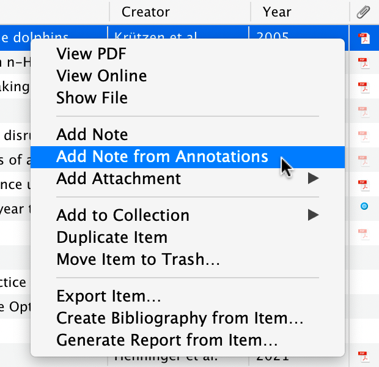

-
Install the two pieces
- Input
- Your laptop and usual browser.
- Action
- Install Zotero and the Zotero Connector. Open Zotero; keep it running when saving from your browser.
- Output
- A desktop library and a save button in your browser.
No account is needed for this local exercise. An account is useful for syncing; PDF storage allowances are separate from the free app. Sync details.
-
Make one project collection
- Input
- Our question about immigration and local wages.
- Action
- Right-click My Library, choose New Collection, and name it Immigration and local wages.
- Output
- One place for this project's references.
A collection is like a playlist: a reference can belong to several collections without duplicating the item. Collections and tags.
-
Save the paper, not just the webpage
- Action
- Open the article page and press the Connector button. Save to your collection. In Zotero, check author, title, year, journal and DOI against the article page.
- Output
- A checked journal-article record, rather than an unlabelled PDF.
Fallback: add it by DOI
Use Add Item by Identifier in Zotero and enter:
10.1177/001979399004300205
If a record saves as “Web Page”, use the DOI or correct the item type and fields. Saving and metadata help.
-
Attach the right PDF and annotate one claim
- Input
- The checked reference and a legally accessible PDF.
- Action
- If Zotero has not attached it, obtain the PDF through the library or the author's copy and drag it onto the reference. Open it in Zotero. Highlight one finding and comment on its population or setting.
- Output
- One passage with a useful comment, not a page covered in colour.
Check the PDF's title page: a working paper and a published article can have different dates, wording and page numbers.
-
Turn the annotation into a reading note
- Input
- Your annotation.
- Action
- Right-click the parent reference and choose Add Note from Annotations. Add three lines: what the author reports; why it matters to your question; what you must check next.
- Output
- A note with a link back to the passage.

The annotation-to-note command. Official documentation image; appearance can vary by version. Source and instructions. Example: a useful first note
Curated illustration, based on the published abstract
- Author reports
- Little wage or unemployment response among less-skilled workers in this Miami episode.
- My interpretation
- This is relevant to my question, but does not establish the effect of every immigration inflow.
- Next check
- Read the comparison-city construction and sample definitions before relying on the design.
Evidence: Card (1990), abstract, printed p. 245. Reading status: abstract only for this illustrative claim. Replace this with your own checked passage.
-
Repeat for your own project
- Input
- One paper connected to your current question.
- Action
- Save and check it. Make a short note using the reading-note template. Label exactly what you read, and keep your interpretation separate from the author's finding.
- Output
- A reference and note you can bring to supervision.
From annotations to your draft
Once several papers are annotated, choose the next output you need. These workflows use Zotero's built-in tools.
Build a cross-paper outline
Select two or three parent references and choose Create Note from Annotations. In the combined note, add headings such as Question, Design and Findings, then write your own comparisons. Use the library's All Fields & Tags search to find text in your notes again.
Mariel example: a note called “Sample and design differences”, with one checked comparison per paper.
Workflows: Combine annotations across papers · Search notes.
Insert notes and live citations into your draft
In Word, Google Docs or LibreOffice, place the cursor in your draft and use Zotero's Insert Note command (Add Note in some versions) to insert a chosen note with its citations. For new citations, use Add/Edit Citation; then Add/Edit Bibliography builds the reference list.
Workflows: Insert notes: Zotero team guidance · Word · Google Docs · LibreOffice.
Make a reading report or annotated bibliography
Select references, right-click and choose Generate Report from Selected Items. Save or print the report: it brings metadata and notes into one reading document. Generate the annotation notes first, as in step 5.
For a simple annotated bibliography, use Create Bibliography from Items, paste the formatted references into a document, and add your own short summaries beneath them. A normal bibliography does not automatically include your PDF highlights or child notes.
Workflows: Generate a report · Save or print it · Create formatted references.
Export to LaTeX or another notes editor
Right-click the note, not its parent reference, and choose Export Note → Markdown or HTML; retain Zotero links where offered. For reference records, right-click the collection → Export Collection → BibTeX for LaTeX, or RIS for another reference manager. These exports are copies, not automatic two-way sync.
Workflows: Export notes with source links · Export a collection.
Keep copied quotations marked as quotations. Synthesis means explaining connections and differences in your own words, not assembling a string of highlights.
Stop here
Keep one checked note for now. When you start drafting, try one workflow above; no extra plugins are needed to get started.